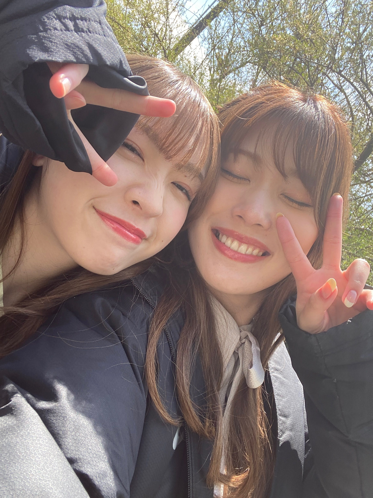
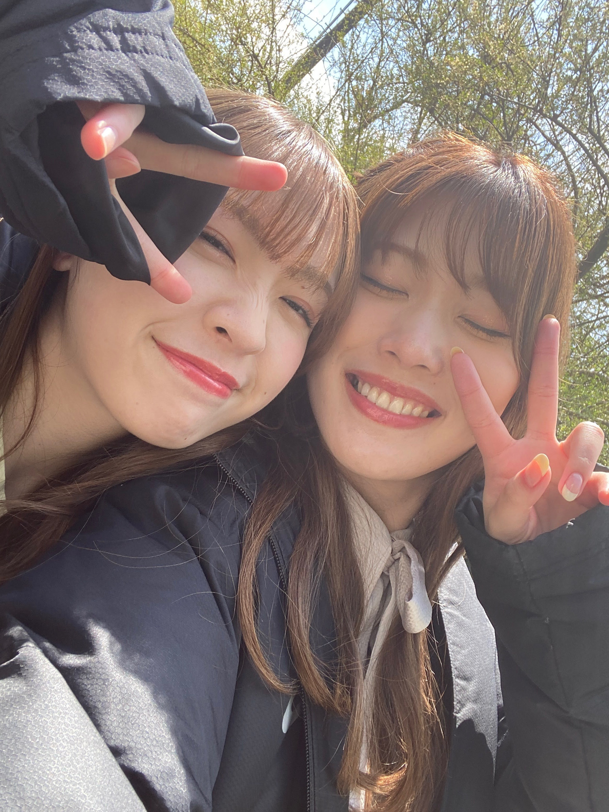

2021/0516Sun大切な皆様へ
ファンの皆様へ
私からお知らせがあります。
27枚目シングルをもちまして
乃木坂46を卒業する事を決めました。
お久しぶりのブログがこのような
内容のブログになってしまい
いきなりの発表で驚かせてしまい
申し訳ありません...
卒業日程は決まり次第
またお知らせ致します。
私の中では1年半程前から悩みに悩んで
スタッフさんと相談させて頂き
決めていました。
私の中で、
外の世界での色々なものを
もっと見ていきたいと思ったし
きっとそう簡単ではない山も
登っていきたいなあと
そう思い決断したので
とってもとっても前向きな決断です！！
13歳で入り、乃木坂46として
活動してきた8年間は
大切な宝物です。
悔しい事も嬉しい事も
色々な感情を経験しました
メンバーが大好きで、
ファンの皆様が大好きで、
スタッフの皆様が大好きだからこそ
8年という長い間、乃木坂に
いることが出来たのだと思います。
かけがえのない奇跡のような場所に
いられた感謝。
みんなに出会えて本当に良かった！
ファンの皆さんは
私が失敗した時は慰めてくれて、
私を笑わせようと毎回考えてきてくれて
私に嬉しいお仕事があった時は
私よりも私の親よりも喜んでくれてる気がする笑
私の為に泣いてくれたら笑ってくれたり、
私を好きでいてくれてるみんなは
本当に感受性が豊かで心が繊細だからこそ
他のメンバーをも大切に出来る
素敵な人たちばかり。
そんな方達に囲まれて8年間
乃木坂46として活動してこれたことが
何よりの幸せです！
右も左も分からないような未熟な私に
皆さんはたくさんの事を
教えて下さいました。
それを無駄にはせず沢山の感謝を込めて
これからも前に進んでいきたいと思います！
そしてアンダーライブ2021の開催が
決定致しました！
私と純奈にとって、
これが最後のライブになります。
是非、沢山の方に見ていただきたいです！
ラストライブ、全力で楽しみたい。
無観客という部分では悔しい思いもあります。
ですがその分沢山の方に
見ていただけるという事だよね
だったら張り切って頑張るぞ〜！！

同じタイミングで卒業発表した純奈。
曲の好みだったり趣味だったり
共通するものが多くて
共有し合ったり、
仕事帰り1時間以上二人で歩いて帰ったり。
ふとお互い会いたくなって
会いたいって連絡くれたから
次の日純奈の家にすぐ行った事もあった笑
お互いメンバーみんなと仲良いけど、
何かあるたびすぐ連絡したり
仕事の事、プライベートの事を
話し合ったり価値観が合ってるのは
なんだかんだ純奈だった
8年間、お互いよく頑張ったね！！
最後までみんなと、
そしてファンの皆さんと
沢山の思い出を作りたいなあと
思います(^ ^)
読んでくれてありがとうございました。
みり愛
ファンの皆様へ
私からお知らせがあります。
27枚目シングルをもちまして
乃木坂46を卒業する事を決めました。
お久しぶりのブログがこのような
内容のブログになってしまい
いきなりの発表で驚かせてしまい
申し訳ありません...
卒業日程は決まり次第
またお知らせ致します。
私の中では1年半程前から悩みに悩んで
スタッフさんと相談させて頂き
決めていました。
私の中で、
外の世界での色々なものを
もっと見ていきたいと思ったし
きっとそう簡単ではない山も
登っていきたいなあと
そう思い決断したので
とってもとっても前向きな決断です！！
13歳で入り、乃木坂46として
活動してきた8年間は
大切な宝物です。
悔しい事も嬉しい事も
色々な感情を経験しました
メンバーが大好きで、
ファンの皆様が大好きで、
スタッフの皆様が大好きだからこそ
8年という長い間、乃木坂に
いることが出来たのだと思います。
かけがえのない奇跡のような場所に
いられた感謝。
みんなに出会えて本当に良かった！
ファンの皆さんは
私が失敗した時は慰めてくれて、
私を笑わせようと毎回考えてきてくれて
私に嬉しいお仕事があった時は
私よりも私の親よりも喜んでくれてる気がする笑
私の為に泣いてくれたら笑ってくれたり、
私を好きでいてくれてるみんなは
本当に感受性が豊かで心が繊細だからこそ
他のメンバーをも大切に出来る
素敵な人たちばかり。
そんな方達に囲まれて8年間
乃木坂46として活動してこれたことが
何よりの幸せです！
右も左も分からないような未熟な私に
皆さんはたくさんの事を
教えて下さいました。
それを無駄にはせず沢山の感謝を込めて
これからも前に進んでいきたいと思います！
そしてアンダーライブ2021の開催が
決定致しました！
私と純奈にとって、
これが最後のライブになります。
是非、沢山の方に見ていただきたいです！
ラストライブ、全力で楽しみたい。
無観客という部分では悔しい思いもあります。
ですがその分沢山の方に
見ていただけるという事だよね
だったら張り切って頑張るぞ〜！！

同じタイミングで卒業発表した純奈。
曲の好みだったり趣味だったり
共通するものが多くて
共有し合ったり、
仕事帰り1時間以上二人で歩いて帰ったり。
ふとお互い会いたくなって
会いたいって連絡くれたから
次の日純奈の家にすぐ行った事もあった笑
お互いメンバーみんなと仲良いけど、
何かあるたびすぐ連絡したり
仕事の事、プライベートの事を
話し合ったり価値観が合ってるのは
なんだかんだ純奈だった
8年間、お互いよく頑張ったね！！
最後までみんなと、
そしてファンの皆さんと
沢山の思い出を作りたいなあと
思います(^ ^)
読んでくれてありがとうございました。
みり愛
2021/05/16 18:00
コメント(1856)
今までありがとう
卒業すごく寂しいです。
悲しいけどこれからのみり愛も変わらず応援してます。
アンダーライブ楽しみにしてます。
悲しいけどこれからのみり愛も変わらず応援してます。
アンダーライブ楽しみにしてます。
みり愛ちゃん、報告ありがとう。
みり愛ちゃんのダンスと笑顔が大好きだったよ。
みり愛ちゃんの卒業まで、そして卒業後もずっと応援してるよ。
今まで沢山の楽しさと幸せをくれてありがとう。
みり愛ちゃんのダンスと笑顔が大好きだったよ。
みり愛ちゃんの卒業まで、そして卒業後もずっと応援してるよ。
今まで沢山の楽しさと幸せをくれてありがとう。
みり愛、本当にお疲れ様、、
突然の発表で驚いたけどここまでアンダー、2期生の中でひっぱっていってくれありがとう！！
大変なこともあるし、色々と悩んだと思うけどこの発表を真摯に受け止めるよ！
突然の発表で驚いたけどここまでアンダー、2期生の中でひっぱっていってくれありがとう！！
大変なこともあるし、色々と悩んだと思うけどこの発表を真摯に受け止めるよ！
乃木坂での活動、本当にお疲れ様でした。
1番記憶に残るのはやっぱり、この前の46時間テレビの電子台かな。
すっごくダンスが上手くて、頭から離れなかったよ。
卒業しても続けていってね！
ありがとう！
1番記憶に残るのはやっぱり、この前の46時間テレビの電子台かな。
すっごくダンスが上手くて、頭から離れなかったよ。
卒業しても続けていってね！
ありがとう！
みり愛…卒業…おめでとう…
高校生の頃東京体育館で風船は生きているのセンターを見た時から推しメンで、社会人になってみり愛の活動が頑張る気力だったし…辛いです。でも卒業しても応援するのは変わらずです。乃木坂に入ってくれて居てくれてありがとう…また選抜で活躍する姿もみたかったけど、ほんとにうにありがとう。元気で…
高校生の頃東京体育館で風船は生きているのセンターを見た時から推しメンで、社会人になってみり愛の活動が頑張る気力だったし…辛いです。でも卒業しても応援するのは変わらずです。乃木坂に入ってくれて居てくれてありがとう…また選抜で活躍する姿もみたかったけど、ほんとにうにありがとう。元気で…
みり愛ちゃんマジか…
次のシングルのミーグリ取れてて良かった…
たくさんたくさん感謝を伝えるミーグリにするね！
ひとまずは知らせてくれてありがとう
そして一旦お疲れ様！
アンダラ 絶対観るからね！
次のシングルのミーグリ取れてて良かった…
たくさんたくさん感謝を伝えるミーグリにするね！
ひとまずは知らせてくれてありがとう
そして一旦お疲れ様！
アンダラ 絶対観るからね！
約8年間お疲れ様でした。みり愛さんのキャラが好きでした！
最後まで乃木坂の活動を楽しんでください！これからもずっと応援してます！
最後まで乃木坂の活動を楽しんでください！これからもずっと応援してます！
お疲れ様でした。
いつまでもキラキラと輝くあなたでいてください。
あなたに出逢えて、幸せでした。
いつまでもキラキラと輝くあなたでいてください。
あなたに出逢えて、幸せでした。
8年間お疲れ様でした！
こうやって初期メンバーが卒業していくのは寂しいけど、また新しい場所で頑張って下さい！
ずっと応援してます！！
こうやって初期メンバーが卒業していくのは寂しいけど、また新しい場所で頑張って下さい！
ずっと応援してます！！
応援してます
本当にありがとうございました！
最後まで頑張ってね！
最後まで頑張ってね！
みり愛とじゅんなのがくたび
何回も見直したなぁ
思い出をたくさんありがとう
何回も見直したなぁ
思い出をたくさんありがとう
みり愛、卒業おめでとう
今までありがとう！！
今までありがとう！！
みり愛ちゃん、ブログそしてブログありがとう
めちゃくちゃ悲しいし、これから乃木坂の渡辺みり愛が見られないのはすごい悲しいけどみり愛ちゃんがどこにいっても応援してるし、いつもの愛くるしいみり愛でいてほしい！
残り時間あとすこしかもだけど応援し続けるよ！
みり愛すきだーーーー
めちゃくちゃ悲しいし、これから乃木坂の渡辺みり愛が見られないのはすごい悲しいけどみり愛ちゃんがどこにいっても応援してるし、いつもの愛くるしいみり愛でいてほしい！
残り時間あとすこしかもだけど応援し続けるよ！
みり愛すきだーーーー
みりあ8年間ほんとうにありがとう泣
みりあが選抜に入っているSing Out!を見るのが本当に本当に好きでした。みりあはダンスも歌もうまいしずっと推してるメンバーでした！とくに、傾斜するとかアナスターシャのダンス、そしてゆっくりと咲く花のMVでのみりあどれも好きでした。この8年間苦しいことも辛いこともたくさんあったと思うけど今までも頑張ってきてくれてありがとう！残りの期間でもたくさん思い出作ってください。最後のアンダーライブ楽しみにしています！
みりあが選抜に入っているSing Out!を見るのが本当に本当に好きでした。みりあはダンスも歌もうまいしずっと推してるメンバーでした！とくに、傾斜するとかアナスターシャのダンス、そしてゆっくりと咲く花のMVでのみりあどれも好きでした。この8年間苦しいことも辛いこともたくさんあったと思うけど今までも頑張ってきてくれてありがとう！残りの期間でもたくさん思い出作ってください。最後のアンダーライブ楽しみにしています！
みり愛へ
ありがとう〜
最後直接会いないけと
ずっと応援します
ありがとう〜
最後直接会いないけと
ずっと応援します
みり愛ちゃん8年間おつかれ様でした。
みり愛ちゃんのダンスが歌声が、笑ってる顔が、全部全部大好きです！卒業まで残り少ないけど、全力で応援します！
たくさんの笑顔と勇気をありがとう！
みり愛ちゃんのダンスが歌声が、笑ってる顔が、全部全部大好きです！卒業まで残り少ないけど、全力で応援します！
たくさんの笑顔と勇気をありがとう！
あかん泣きそう
お疲れ様でした。
ずっと応援してます！
お疲れ様でした。
ずっと応援してます！
ブログ更新ありがとう！
サヨナラの意味の全国握手会でみり愛さんの良さに惹かれてここまで応援させてもらいました。いつかは卒業するものだから、みり愛さんが決めたことなら前向きにファンとしてアンダラを目に焼き付けたいと思います。
卒業しても推しは変わりません！
では！
サヨナラの意味の全国握手会でみり愛さんの良さに惹かれてここまで応援させてもらいました。いつかは卒業するものだから、みり愛さんが決めたことなら前向きにファンとしてアンダラを目に焼き付けたいと思います。
卒業しても推しは変わりません！
では！
8年間、本当にお疲れ様です！
推してて楽しかったし、握手会またしたかったな〜。
みり愛と話すの凄く楽しかったし、いきなりでびっくりだし、寂しいし、ちょっとまだ認識できてないっていうか。
アンダラで、みり愛のことしっかり見届けるね。
あーさみしい！ほんとにほんとに。
これからの活動も何するのか分からないけど、もし涼が見届けられるものなのだとしたら、応援続けるから、頑張って！
残り少ないミーグリも、たくさん話したいな。
本当に大好きな存在です、ありがとう！
涼
推してて楽しかったし、握手会またしたかったな〜。
みり愛と話すの凄く楽しかったし、いきなりでびっくりだし、寂しいし、ちょっとまだ認識できてないっていうか。
アンダラで、みり愛のことしっかり見届けるね。
あーさみしい！ほんとにほんとに。
これからの活動も何するのか分からないけど、もし涼が見届けられるものなのだとしたら、応援続けるから、頑張って！
残り少ないミーグリも、たくさん話したいな。
本当に大好きな存在です、ありがとう！
涼
みり愛お疲れさま。
そっか。決めたんだね。
もう少し時間あるから、その時までに言葉をまとめとくね。
そっか。決めたんだね。
もう少し時間あるから、その時までに言葉をまとめとくね。
ありがとうございました！
アンダーライブ楽しみにしてます！！
画面の前から、熱を伝えます！！
o(`д´ ｡)ｶﾞﾝﾊﾞﾚｰ!!
アンダーライブ楽しみにしてます！！
画面の前から、熱を伝えます！！
o(`д´ ｡)ｶﾞﾝﾊﾞﾚｰ!!
淋しくなるなあ
本当に
淋しい
本当に
淋しい
みりあ、早いよ…
悲しい…悲しすぎる！！！
でも、これからもずっと応援し続けるから！
握手会、神対応だったの忘れないよー！！！！
悲しい…悲しすぎる！！！
でも、これからもずっと応援し続けるから！
握手会、神対応だったの忘れないよー！！！！
出会えたことに感謝です
８年間おつかれさま
最後までみり愛らしく
頑張って
ありがとうみり愛ちゃん
また涙が止まらないライブになりそうですが応援してます(TωT)
また涙が止まらないライブになりそうですが応援してます(TωT)
乃木坂46に加入してくれて、2期生でいてくれて、僕たちにたくさんの愛を届けてくれて本当にありがとう！！
寂しい…
けど…みり愛が決めた道なので全力で応援してます
けど…みり愛が決めた道なので全力で応援してます
みり愛ちゃん、卒業悲しいですー！
でも、みり愛ちゃんが決めたことはファンの我々は応援するだけです！
こんな自分が言うのもなんですけど、みり愛ちゃんを推しててとーっても楽しかったです！！
みり愛ちゃんが乃木坂に在籍する最後の最後まで応援します！アンダーライブももちろんみます！
みり愛ちゃんと野球トークとっても楽しかったから最後のミーグリでいっぱい話しましょー！
みり愛ちゃん、本当にありがとう！
でも、みり愛ちゃんが決めたことはファンの我々は応援するだけです！
こんな自分が言うのもなんですけど、みり愛ちゃんを推しててとーっても楽しかったです！！
みり愛ちゃんが乃木坂に在籍する最後の最後まで応援します！アンダーライブももちろんみます！
みり愛ちゃんと野球トークとっても楽しかったから最後のミーグリでいっぱい話しましょー！
みり愛ちゃん、本当にありがとう！
突然でびっくりしたけど自分で決めた道ですね
みり愛ちゃんを推せて楽しかった！これからの道も応援してます！
ミーグリで会いましょう！
みり愛ちゃんを推せて楽しかった！これからの道も応援してます！
ミーグリで会いましょう！
そろそろこんな時がくるだろうなーと思ってた。
予想してた時期より少し早かったけど。
やっぱり寂しいけど、わーみーちゃんが悩んで決めたことだから、応援するよ❗
残り少ない時間を楽しんでほしいし、楽しみたい❗
予想してた時期より少し早かったけど。
やっぱり寂しいけど、わーみーちゃんが悩んで決めたことだから、応援するよ❗
残り少ない時間を楽しんでほしいし、楽しみたい❗
8年間お疲れ様でした！
アンダーライブ絶対見るね！
みり愛ちゃんのダンスが大好きです！
アンダーライブ絶対見るね！
みり愛ちゃんのダンスが大好きです！
みり愛さんお疲れ様でした！
2期生で頑張る姿、氷瀑を登る姿に心を打たれました。
ありがとうございました！！
残りの時間も楽しんでください！！！
卒業後も応援し続けます
2期生で頑張る姿、氷瀑を登る姿に心を打たれました。
ありがとうございました！！
残りの時間も楽しんでください！！！
卒業後も応援し続けます
寂しいよ
発表おつかれさまです
涙が、、、
涙が、、、
ダンスをしているみり愛さんをいつまでも忘れません。
ありがとうございました！
これからの活躍を祈っています！
ありがとうございました！
これからの活躍を祈っています！
卒業おめでとうございます。そして、今まで本当にお疲れさまです！沢山の笑顔をありがとうございます！これからもずっと推しメンです！
お疲れ様でした！ボーダーはみんなの心に残る曲として引き継がれていくと思います。最後となる二期生曲のアナスターシャは凄く良い曲ですしね。個人的にはみり愛のダンス素敵だったよ。今までありがとう。残り僅かですが、最後まで乃木坂を楽しんでください！
みり愛ちゃん
いきなりで正直寂しすぎるんだけど
これからもずっと応援してるよ！
みり愛ちゃんの未来に幸あれ!!!
大好き♡
いきなりで正直寂しすぎるんだけど
これからもずっと応援してるよ！
みり愛ちゃんの未来に幸あれ!!!
大好き♡
みり愛お疲れ様！
まっちゃってやつ覚えてるかな？
握手会に行けなくなっちゃって応援はテレビの前だけだったけど本当に努力してる姿を見て推しになりました！
また必ずタイパンツ履いてホットドッグ被って現れます！
このシングルまで乃木坂として駆け抜けてください！
まっちゃってやつ覚えてるかな？
握手会に行けなくなっちゃって応援はテレビの前だけだったけど本当に努力してる姿を見て推しになりました！
また必ずタイパンツ履いてホットドッグ被って現れます！
このシングルまで乃木坂として駆け抜けてください！
卒業発表お疲れ様。
みり愛8年間ありがとう。
みり愛の8年間のうち3年間くらいしか知らないけど、私はみり愛にたくさん助けられたよ！
勉強とか就活とかみり愛が応援してくれたからいい結果がでたよ！
就活終わって直接報告に行きたかったけど、この状況でなかなか会いにいけなくて、、、
でも、みり愛には本当に感謝してるよ！
大好きなみり愛に出会えてよかった！
卒業後も変わらず応援し続けるよ！！
これからのみり愛と純奈もずーっと大好きで大切な存在です。
本当にありがとう。
アンダーライブ楽しみにしています。
みり愛8年間ありがとう。
みり愛の8年間のうち3年間くらいしか知らないけど、私はみり愛にたくさん助けられたよ！
勉強とか就活とかみり愛が応援してくれたからいい結果がでたよ！
就活終わって直接報告に行きたかったけど、この状況でなかなか会いにいけなくて、、、
でも、みり愛には本当に感謝してるよ！
大好きなみり愛に出会えてよかった！
卒業後も変わらず応援し続けるよ！！
これからのみり愛と純奈もずーっと大好きで大切な存在です。
本当にありがとう。
アンダーライブ楽しみにしています。
みり愛ちゃんブログ更新ありがとう。
みり愛ちゃんの、お顔も性格も歌もダンスも全部全部大好きです。
卒業本当に寂しいし、まだ続けて欲しい気持ちでいっぱいだけど、これからのみり愛ちゃんも応援しています。
アンダラ、目に焼き付けます。
卒業発表お疲れ様です
今の気持ちは、寂しいです
ブログ更新ありがとう。
そして、8年間お疲れ様でした。
長年2期生を見てきた自分としては、2期生が少しずつ外の世界へ羽ばたいていくのを嬉しさと同時に寂しさがこみ上げてきます。
それでもみりあちゃんがとっても考えて出した結論を応援したいと思います。
これまで長い間、そして大事な青春を乃木坂で過ごしてくれてアイドルになってくれてありがとう。
アンダーライブとミーグリ、最後の時間になってしまうけど楽しんでね！
残り短い時間ですが、これからもよろしくね！
そして、8年間お疲れ様でした。
長年2期生を見てきた自分としては、2期生が少しずつ外の世界へ羽ばたいていくのを嬉しさと同時に寂しさがこみ上げてきます。
それでもみりあちゃんがとっても考えて出した結論を応援したいと思います。
これまで長い間、そして大事な青春を乃木坂で過ごしてくれてアイドルになってくれてありがとう。
アンダーライブとミーグリ、最後の時間になってしまうけど楽しんでね！
残り短い時間ですが、これからもよろしくね！
今は本当にありがとうとしか言えません。
お疲れ様でした。
アンダーライブ、今迄以上に目を凝らし
て見なきゃ。お礼文は改めて書きますね。
お疲れ様でした。
アンダーライブ、今迄以上に目を凝らし
て見なきゃ。お礼文は改めて書きますね。
みり愛ちゃん。お疲れ様。ありがとう。
でも、
いやー参ったな～。
伝えたい事はいっぱいあるんだけど、
言葉に出来ないや。
ごめんね。
ファンとしては失格だね。
寂しいよ～。
でも、
いやー参ったな～。
伝えたい事はいっぱいあるんだけど、
言葉に出来ないや。
ごめんね。
ファンとしては失格だね。
寂しいよ～。
みり愛ちゃん(T_T)


そっか。
将来を見据えての明るい卒業なら、俺としても全力でこの先のみり愛ちゃんを応援する！
みり愛ちゃんの未来だもん！
俺達は応援するのが責務だからねッ！
今年大学生になって上京してきて、いよいよこれからやぁ！
って時だったから、受け止めきれない思いは、正直ある。
でも、あんまりウダウダ言ってもみり愛ちゃんを悲しませるだけだから、
後悔ないように最後の最後まで応援しよう！って気持ちになってるよ！
ほんとにみり愛が乃木坂に残したもの、与えた影響はとんでもないし、ほんとに在籍してくれてありがとう！って感じ。。
是非、これからも応援させてください！
まずはアンダーライブ！
最後のライブだけど、俺は絶対見るし、
みり愛ちゃんも、後悔ないように楽しんで！
俺は、最後の最後まで応援します！！
大好き
ひろと